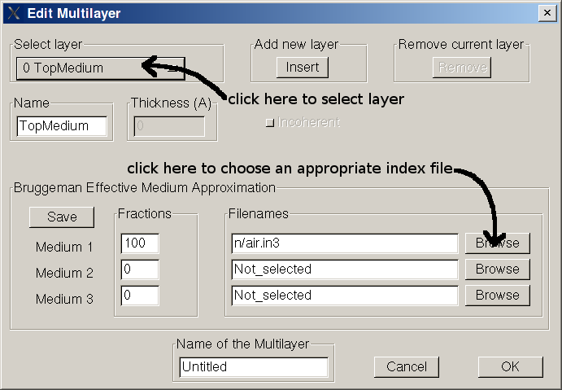

We assume the reader has some basic knowledge of optics and it
is confident with terms like Reflectance, Transmittance, wavelength etc.
Abstract
Optical is a software that can compute theoretical
Reflectance (R ),
Transmittance
(T ) and internal light energy flux of a multilayer. A multilayer is a
structure composed of
several isotropic layers in intimate contact. A mirror is a simple
example of multilayer: we have a glass
(let's say 1 mm thick) then we have some metal on one side of the glass
(let's say aluminium, 500 nm thick) for a total of two layers. We will
use this multilayer to show how Optical works.
Start Optical
O.K., first of all I assume you have already launched Optical (see the Optical web page for instruction), you
should see the following
Defining a multilayer
Let's create a new
empty Multilayer clicking on File ... New Multilayer.
The button "Edit M" is active now, we can edit the multilayer clicking
on it, the following window should appear

First of all we note that actually two layers already exist, one is the
"TopMedium" and the other is the "BottomMedium". These two layers
represent the media on the
top and on the bottom of the multilayer. These media are usually air,
but
can be any other medium (the top must be transparent). The light source
is assumed to be
in the TopMedium. To add a new layer in between first select the
TopMedium then click "Insert". You can verify that now there are 3
layers, a new layer named "Untitled" is now in position 1. You can give
to the layer the name you want (Glass), you must define the thickness
(1 mm = 1E7 A), you must chose if you want treat the layer as coherent
or as incoherent (the glass is very thick, so choose incoherent) and
finally you must choose an appropriate index file to represent the
material (Click on Browse then choose "glass.in3"). The index file is
the file containing the index of refraction of a specific material.
Next we have to insert the aluminium layer. Select the
glass layer and then click on insert button (the insert button insert a
new layer at the bottom of selected layer). Use these values for
aluminium: thickness = 5000 A, film is coherent, index file =
aluminum.in3. If you like you can give a name to the multilayer
(Mirror). Click on button OK to confirm, you should come back to the
first windom.
Compute R and T spectra
To compute R and T spectra of your multilayer you can choose the
incidence angle (on the bottom-right) then click on the button
"Compute", you should get a graph as follows.
Every time you compute R and T these date are copied in a text file
named "RT.dat". Of course you can save your multilayer then reload it
later. If you like more or less points to be computed you can configure
this in the file "settings.txt".
Compute Internal Light Absorption spectra
Let's
say we want to know the spectral distribution of light absorbed in the
glass. Click on
the button "E
Flux", the following window should appear
select the layer you want (glass) and click on button compute under
"Layer absorption", you should get the following result
where the black line represent the fraction of light absorbed in the
glass. Every time you compute light absorption these
data are copied in a text file named "A.dat".
Compute Internal Light Energy Flux spectra
Let's
say we want to know the spectral distribution of light energy flux in
the aluminum layer at a depth of 50 A.
Click on
the button "E
Flux", select the layer "aluminium", under "Energy Flux" insert the
depth (50) and click on the associated compute button. Every time
you compute energy flux these
data are copied in a text file named "Flux.dat".
Create a new index file
An index file is a simple text file with extension *.in3 containig
information about n e k of the material. You can have a look to the
existing index files after software installation in directory /n. To
show the structure we use
as example the index file "air.in3"
"Air"
first line
is free, for comments and information
100 200000 range
of wavelenght, min max in angstrom
2
number of data point for n, here we
have 2 points
100 1 first value for n, wavelength is 100
n is 1
200000 1 second (and last) value for n,
wavelength is 200000 n is 1
2
number of data point for k, here we
have 2 points
100 0 first value for k, wavelength is 100
k is 0
200000 0 second (and last) value for k,
wavelength is 200000 k is 0
Import experimental R and T
Experimental data can be imported clicking on File ... Load Experimental Data.
File containing both R and T spectra must begin with rt or RT and have the extension .dat (valid names are for instance RTsample.dat, rtsample.dat). The first row of the file is for comment and is ignored. Each following row must contain wavelength (nm), R (%), T(%). Values can be separated by spaces, tab or comma.
This is an example
This is the first row for comment
300.0 50 50
301.0 51 49
302.0 51.5 48.5
File containing only R must begin with r_ or R_ (valid names are for instance R_sample.dat, r_test.dat).
File containing only T must begin with t_ or T_ (valid names are for instance T_sample.dat, t_test.dat).
When a file containing only R (r_sample1.dat) is loaded if the corresponding T file exist (t_sample1.dat) in the same directory then it is loaded too, and vice versa.
Thickness determination
Let's start with an example. We want to evaluate the thickness of a thin film deposited on top of a glass.
First you have to load experimental R and T data. Then you have to define a multilayer representing your sample (see above). You have to know the index of refraction of the glass and of the film. Use a guess value for the tickness of the film. The button Thick det is now active, click on it. On the thickness determination window select the layer you want to fit (the film), the thickness search range (change it with the arrow) and on what data perform the fit (R, T or both) and Click OK. You will see a window with the calculated thickness and a chi square test (should be less than 1). You will see also the plot with calculated R and T. If the calculated R and T are very different from the experimental one (chi test >> 1) it means that the thickness guess value was too far away from the actual value and you have to try again with a better one.
To perform the chi square test the accuracy of experimental data must be known. The accuracy is defined in the file setting.txt.
Evaluate absorption coefficient from
experimental R and T spectra
If you have a film on glass, have experimental R and T and have a rough idea of what should be
n of the film (N=n+jk or N=n-jk were j represents the imaginary part) there is a tool that calculates k (the extinction coefficient). Basing on the fact that the quantity T/(1-R) strongly depends on k (and only
sliglty on n) and does not oscillate with wavelength [1] it is possible
to perform a fitting procedure.
The software search for k values that satisfies the equation:
Te/(1-Re)=Tc/(1-Rc)
Te,Re are the experimental transmittance and reflectance
Tc,Rc are the calculated transmittance and reflectance
First you have to define a multilayer with the same structure of the
experimental one (layer on glass / glass). You need the thicknesses and
the indexes of refraction of these materials. Of course you don't know
yet the index of refraction of the layer on glass. You can create an
index file (*.in3) for the layer with constant value for n or you can
use an index file of a similar material. Values for k are ignored. Load
experimental R and T then click on the alpha button, you will get the
Tauc's plot. When you close the Tauc windows a file called Alpha.dat,
containing the absorption coefficient, will be generated in the root
directory of Optical. A file called Alpha.in3 will be also generated in
the directory ...Optical/n.
Alpha.in3 will contain k as calculated, and the same n used before for
the layer.
At this point you can use the file Alpha.in3 for the layer, click on
compute and compare experimental and calculated data.
Eventually (but this requires a little bit of experience) you can
improve the results changing by hand the values of n and repeating the
procedure.
The same considerations apply also in the case of a generic multilayer or even a single layer, for
instance a glass. So if you don't know yet the extinction coefficient of
your glass you can measure R and T and use the tool.
[1] see C.Summonte, MRS Vol 297 (1993) pp 395-400, and therein.
Compute Internal Light Energy Flux profile
Let's
say we want to know the light energy flux profile in the whole
multilayer for a wavelength of 4000 A.
To be finished ...
Using Bruggeman Effective Medium Approximation
To be finished ...